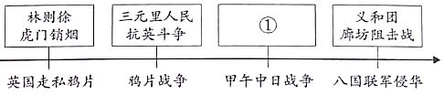
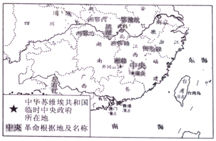

2020年北京市中考历史试题 · 选择题 第11、12、13、14、15题
11．如图示意图中①处应填的是（ ）

A．戚继光抗倭B．雅克萨之战C．黄海海战D．《马关条约》
12．如表反映了中国近代史前期的有识之士的探索历程，①处应填（ ）
主要内容 | 代表言论 |
① | 中国欲自强、则莫如学习外国利器 |
政治制度 | 育才于学堂，论政于议院 |
思想文化 | 科学与人权并重 |
A．军事技术B．文学艺术C．实业救国D．民主共和
13．对以下材料理解正确的是（ ）
①维新派在北京组织强学会，在上海创办《时务报》
②戊戌变法作为一场政治运动失败了，但是作为一场思想文化运动，其作用远不是政变所能剿洗干净的。
A．①属于历史结论
B．①说明戊戌变法废除了旧制度
C．②属于历史史实
D．②肯定了戊戌变法的历史作用
14．以下内容是一位历史人物的部分经历，他是（ ）
时间 | 1894年 | 1905年 | 1912年 | 1913年 |
事件 | 成立兴中会 | 成立中国同盟会 | 就任中华民国 临时大总统 | 发动“二次革命” |
A．洪秀全B．梁启超C．章炳麟D．孙中山
15．如图反映的是（ ）

A．北伐胜利进军B．工农武装割据
C．坚持敌后抗战D．三大战役胜利